# A collection of R packages designed for data science
library(tidyverse)
# Converts stats functions to a tidyverse-friendly format
library(rstatix)
# Creates diagnostic plots using ggplot2
library(ggResidpanel)7 Two-way ANOVA
Learning outcomes
Questions
- When is the use of a two-way ANOVA appropriate?
- How do I perform this in R?
Objectives
- Be able to perform a two-way ANOVA in R
- Understand the concept of interaction between two predictor variables
- Be able to plot interactions in R
7.1 Libraries and functions
Click to expand
7.1.1 Libraries
7.1.2 Functions
# Creates diagnostic plots
ggResidpanel::resid_panel()
# Creates a linear model
stats::lm()
# Creates an ANOVA table for a linear model
stats::anova()7.1.3 Libraries
# A Python data analysis and manipulation tool
import pandas as pd
# Python equivalent of `ggplot2`
from plotnine import *
# Statistical models, conducting tests and statistical data exploration
import statsmodels.api as sm
# Convenience interface for specifying models using formula strings and DataFrames
import statsmodels.formula.api as smf7.1.4 Functions
# Summary statistics
pandas.DataFrame.describe()
# Plots the first few rows of a DataFrame
pandas.DataFrame.head()
# Reads in a .csv file
pandas.read_csv()
# Creates a model from a formula and data frame
statsmodels.formula.api.ols()
# Creates an ANOVA table for one or more fitted linear models
statsmodels.stats.anova.anova_lm()7.2 Purpose and aim
A two-way analysis of variance is used when we have two categorical predictor variables (or factors) and a single continuous response variable. For example, when we are looking at how body weight (continuous response variable in kilograms) is affected by sex (categorical variable, male or female) and exercise type (categorical variable, control or runner).
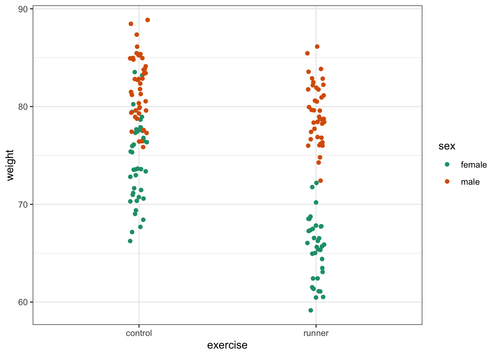
When analysing these type of data there are two things we want to know:
- Does either of the predictor variables have an effect on the response variable i.e. does sex affect body weight? Or does being a runner affect body weight?
- Is there any interaction between the two predictor variables? An interaction would mean that the effect that exercise has on your weight depends on whether you are male or female rather than being independent of your sex. For example if being male means that runners weigh more than non-runners, but being female means that runners weight less than non-runners then we would say that there was an interaction.
We will first consider how to visualise the data before then carrying out an appropriate statistical test.
7.3 Data and hypotheses
We will recreate the example analysis used in the lecture. The data are stored as a .csv file called data/CS4-exercise.csv.
7.4 Summarise and visualise
exercise is a data frame with three variables; weight, sex and exercise. weight is the continuous response variable, whereas sex and exercise are the categorical predictor variables.
First, we read in the data:
exercise <- read_csv("data/CS4-exercise.csv")You can visualise the data with:
# visualise the data, sex vs weight
ggplot(exercise,
aes(x = sex, y = weight)) +
geom_boxplot()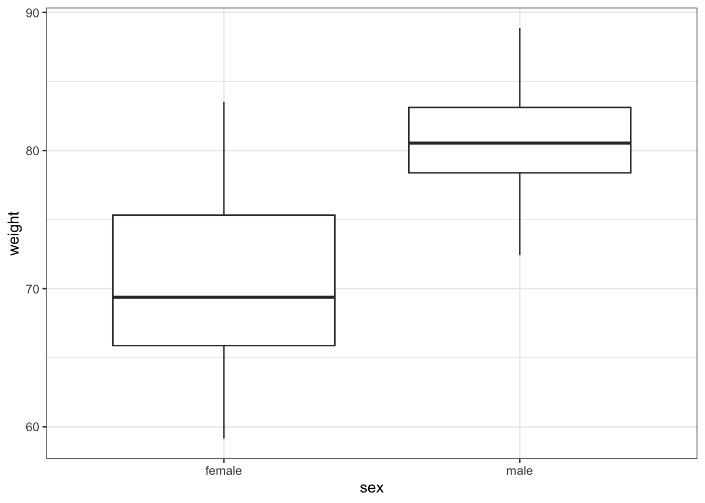
# visualise the data, exercise vs weight
ggplot(exercise,
aes(x = exercise, y = weight)) +
geom_boxplot()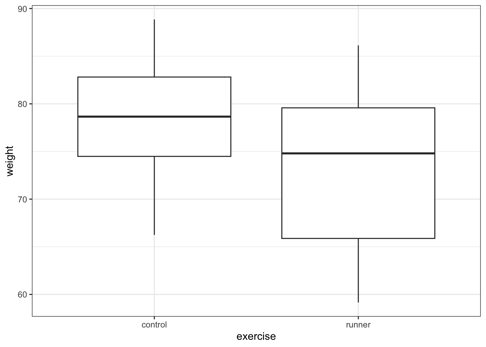
First, we read in the data:
exercise_py = pd.read_csv("data/CS4-exercise.csv")You can visualise the data with:
# visualise the data, sex vs weight
(ggplot(exercise_py,
aes(x = "sex", y = "weight")) +
geom_boxplot())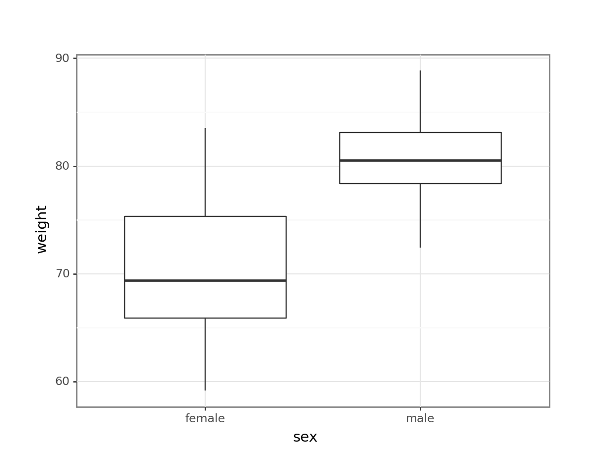
# visualise the data, exercise vs weight
(ggplot(exercise_py,
aes(x = "exercise", y = "weight")) +
geom_boxplot())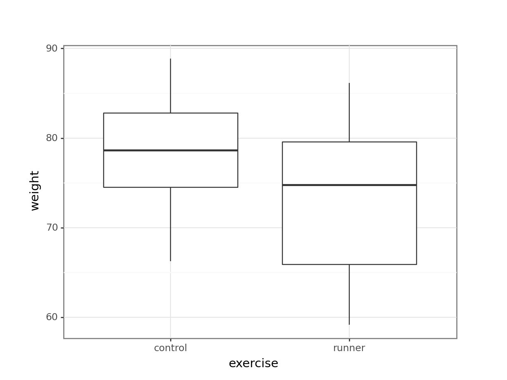
These produce box plots showing the response variable (weight) only in terms of one of the predictor variables. The values of the other predictor variable in each case aren’t taken into account.
A better way would be to visualise both variables at the same time. We can do this as follows:
ggplot(exercise,
aes(x = sex, y = weight, fill = exercise)) +
geom_boxplot() +
scale_fill_brewer(palette = "Dark2")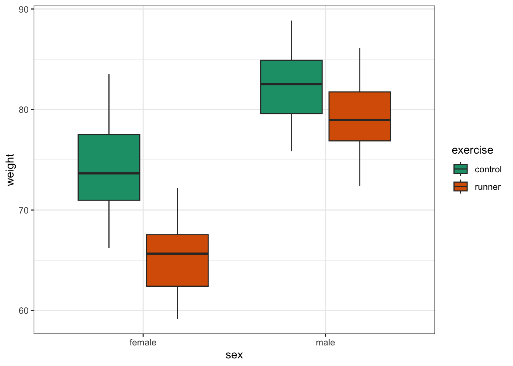
This produces box plots for all (four) combinations of the predictor variables. We are plotting sex on the x-axis; weight on the y-axis and filling the box plot by exercise regime.
Here I’ve also changed the default colouring scheme, by using scale_fill_brewer(palette = "Dark2"). This uses a colour-blind friendly colour palette (more about the Brewer colour pallete here).
(ggplot(exercise_py,
aes(x = "sex",
y = "weight", fill = "exercise")) +
geom_boxplot() +
scale_fill_brewer(type = "qual", palette = "Dark2"))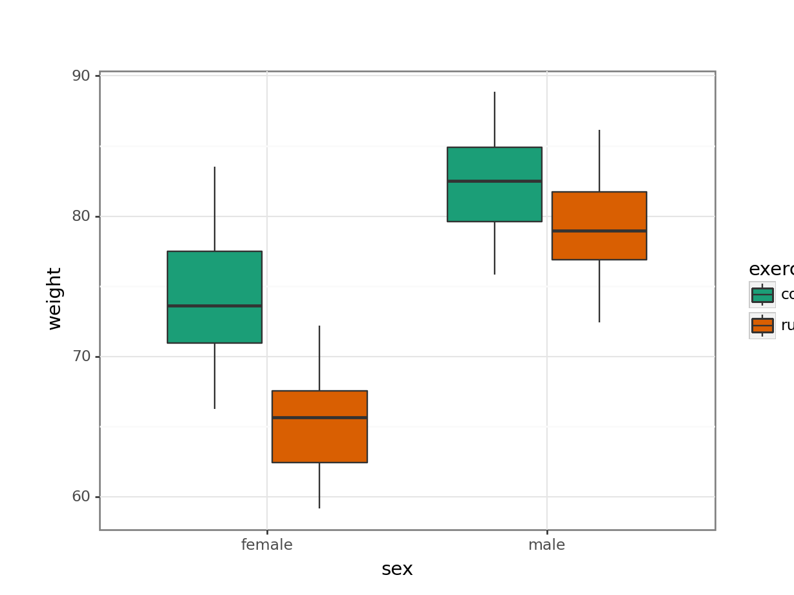
This produces box plots for all (four) combinations of the predictor variables. We are plotting sex on the x-axis; weight on the y-axis and filling the box plot by exercise regime.
Here I’ve also changed the default colouring scheme, by using scale_fill_brewer(type = "qual", palette = "Dark2"). This uses a colour-blind friendly colour palette (more about the Brewer colour pallete here).
In this example there are only four box plots and so it is relatively easy to compare them and look for any interactions between variables, but if there were more than two groups per categorical variable, it would become harder to spot what was going on.
To compare categorical variables more easily we can just plot the group means which aids our ability to look for interactions and the main effects of each predictor variable. This is called an interaction plot.
Create an interaction plot:
We’re adding a bit of jitter to the data, to avoid too much overlap between the data points. We can do this with geom_jitter().
ggplot(exercise,
aes(x = sex, y = weight,
colour = exercise, group = exercise)) +
geom_jitter(width = 0.05) +
stat_summary(fun = mean, geom = "point", size = 3) +
stat_summary(fun = mean, geom = "line") +
scale_colour_brewer(palette = "Dark2")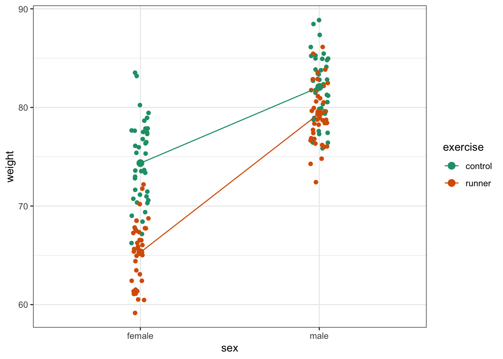
Here we plot weight on the y-axis, by sex on the x-axis.
- we
colourthe data byexerciseregime andgroupthe data byexerciseto work out the mean values of each group geom_jitter(width = 0.05)displays the data, with a tiny bit of random noise, to separate the data points a bit for visualisationstat_summary(fun = mean)calculates the mean for each groupscale_colour_brewer()lets us define the colour palette
The choice of which categorical factor is plotted on the horizontal axis and which is plotted as different lines is completely arbitrary. Looking at the data both ways shouldn’t add anything but often you’ll find that you prefer one plot to another.
Plot the interaction plot the other way round:
ggplot(exercise,
aes(x = exercise, y = weight,
colour = sex, group = sex)) +
geom_jitter(width = 0.05) +
stat_summary(fun = mean, geom = "point", size = 3) +
stat_summary(fun = mean, geom = "line") +
scale_colour_brewer(palette = "Dark2")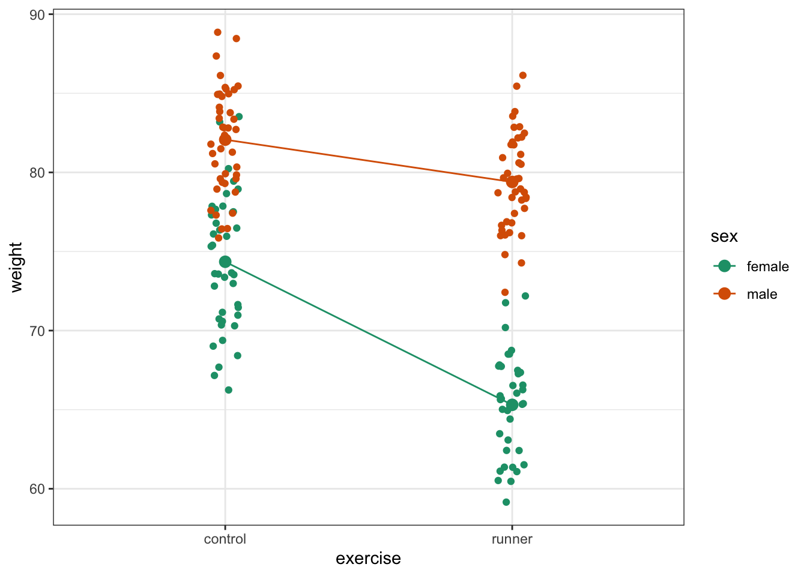
We’re adding a bit of jitter to the data, to avoid too much overlap between the data points. We can do this with geom_jitter().
(ggplot(exercise_py,
aes(x = "sex", y = "weight",
colour = "exercise", group = "exercise")) +
geom_jitter(width = 0.05) +
stat_summary(fun_data = "mean_cl_boot",
geom = "point", size = 3) +
stat_summary(fun_data = "mean_cl_boot",
geom = "line") +
scale_colour_brewer(type = "qual", palette = "Dark2"))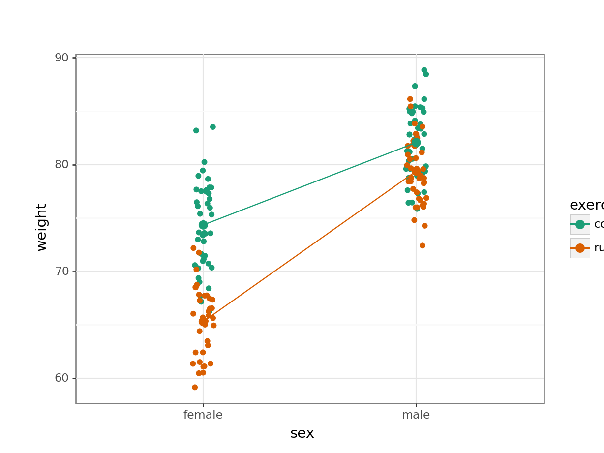
Here we plot weight on the y-axis, by sex on the x-axis.
- we
colourthe data byexerciseregime andgroupthe data byexerciseto work out the mean values of each group geom_jitter(width = 0.05)displays the data, with a tiny bit of random noise, to separate the data points a bit for visualisationstat_summary(fun_data = "mean_cl_boot")calculates the mean for each groupscale_colour_brewer()lets us define the colour palette
The choice of which categorical factor is plotted on the horizontal axis and which is plotted as different lines is completely arbitrary. Looking at the data both ways shouldn’t add anything but often you’ll find that you prefer one plot to another.
Plot the interaction plot the other way round:
(ggplot(exercise_py,
aes(x = "exercise", y = "weight",
colour = "sex", group = "sex")) +
geom_jitter(width = 0.05) +
stat_summary(fun_data = "mean_cl_boot",
geom = "point", size = 3) +
stat_summary(fun_data = "mean_cl_boot",
geom = "line") +
scale_colour_brewer(type = "qual", palette = "Dark2"))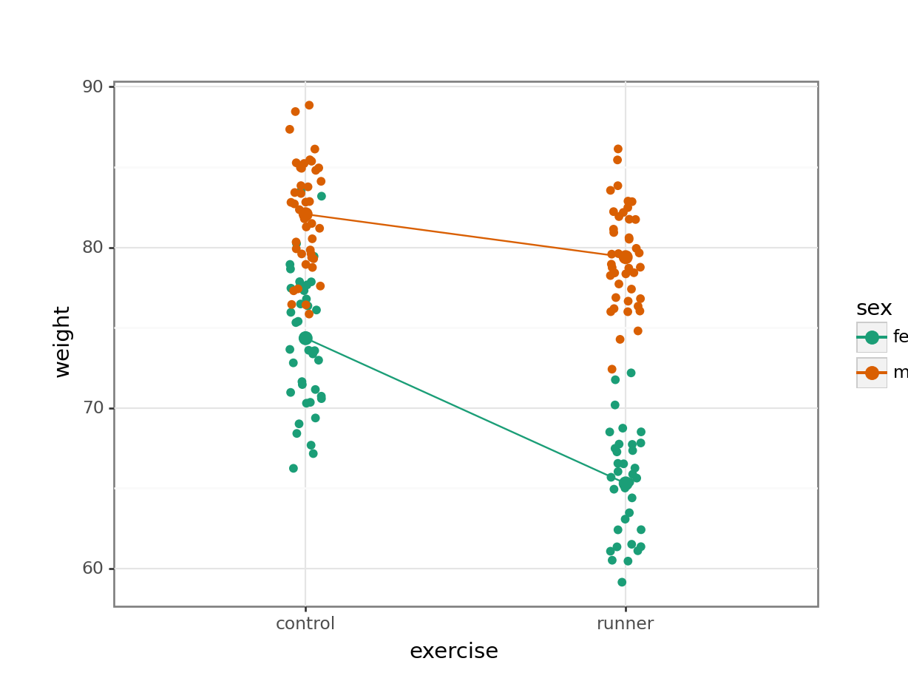
By now you should have a good feeling for the data and could already provide some guesses to the following three questions:
- Does there appear to be any interaction between the two categorical variables?
- If not:
- Does
exercisehave an effect onweight? - Does
sexhave an effect onweight?
- Does
We can now attempt to answer these three questions more formally using an ANOVA test. We have to test for three things: the interaction, the effect of exercise and the effect of sex.
7.5 Assumptions
Before we can formally test these things we first need to define the model and check the underlying assumptions. We use the following code to define the model:
# define the linear model
lm_exercise <- lm(weight ~ sex + exercise + sex:exercise,
data = exercise)The sex:exercise term is how R represents the concept of an interaction between these two variables.
# create a linear model
model = smf.ols(formula = "weight ~ exercise * sex", data = exercise_py)
# and get the fitted parameters of the model
lm_exercise_py = model.fit()The formula weight ~ exercise * sex can be read as “weight depends on exercise and sex and the interaction between exercise and sex.
As the two-way ANOVA is a type of linear model we need to satisfy pretty much the same assumptions as we did for a simple linear regression or a one-way ANOVA:
- The data must not have any systematic pattern to it
- The residuals must be normally distributed
- The residuals must have homogeneity of variance
- The fit should not depend overly much on a single point (no point should have high leverage).
Again, we will check these assumptions visually by producing four key diagnostic plots.
resid_panel(lm_exercise,
plots = c("resid", "qq", "ls", "cookd"),
smoother = TRUE)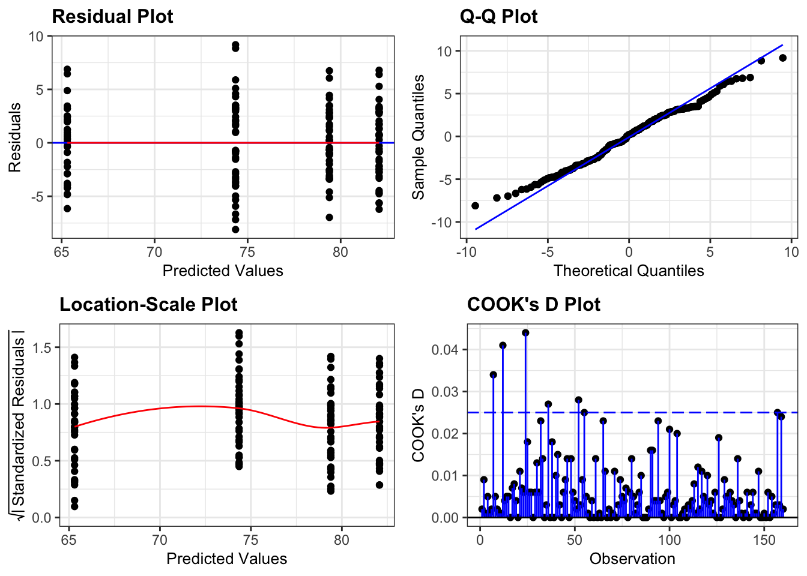
- The Residual plot shows the residuals against the predicted values. There is no systematic pattern here and this plot is pretty good.
- The Q-Q plot allows a visual inspection of normality. Again, this looks OK (not perfect but OK).
- The Location-Scale plot allows us to investigate whether there is homogeneity of variance. This plot is fine (not perfect but fine).
- The Cook’s D plot shows that no individual point has a high influence on the model (all values are well below 0.5)
There is a shorthand way of writing:
weight ~ sex + exercise + sex:exercise
If you use the following syntax:
weight ~ sex * exercise
Then R interprets it exactly the same way as writing all three terms. You can see this if you compare the output of the following two commands:
anova(lm(weight ~ sex + exercise + sex:exercise,
data = exercise))Analysis of Variance Table
Response: weight
Df Sum Sq Mean Sq F value Pr(>F)
sex 1 4510.1 4510.1 366.911 < 2.2e-16 ***
exercise 1 1312.0 1312.0 106.733 < 2.2e-16 ***
sex:exercise 1 404.4 404.4 32.902 4.889e-08 ***
Residuals 156 1917.6 12.3
---
Signif. codes: 0 '***' 0.001 '**' 0.01 '*' 0.05 '.' 0.1 ' ' 1anova(lm(weight ~ sex * exercise,
data = exercise))Analysis of Variance Table
Response: weight
Df Sum Sq Mean Sq F value Pr(>F)
sex 1 4510.1 4510.1 366.911 < 2.2e-16 ***
exercise 1 1312.0 1312.0 106.733 < 2.2e-16 ***
sex:exercise 1 404.4 404.4 32.902 4.889e-08 ***
Residuals 156 1917.6 12.3
---
Signif. codes: 0 '***' 0.001 '**' 0.01 '*' 0.05 '.' 0.1 ' ' 1dgplots(lm_exercise_py)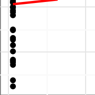
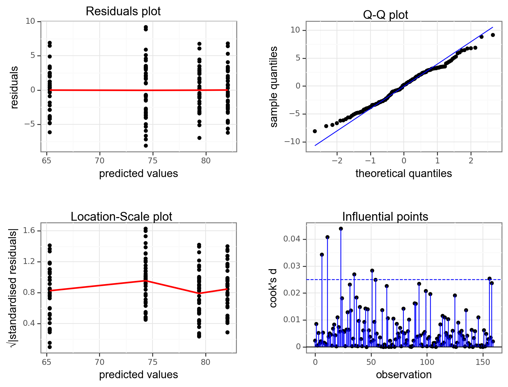
7.6 Implement and interpret test
The assumptions appear to be met well enough, meaning we can implement the ANOVA. We do this as follows (this is probably the easiest bit!):
# perform the ANOVA
anova(lm_exercise)Analysis of Variance Table
Response: weight
Df Sum Sq Mean Sq F value Pr(>F)
sex 1 4510.1 4510.1 366.911 < 2.2e-16 ***
exercise 1 1312.0 1312.0 106.733 < 2.2e-16 ***
sex:exercise 1 404.4 404.4 32.902 4.889e-08 ***
Residuals 156 1917.6 12.3
---
Signif. codes: 0 '***' 0.001 '**' 0.01 '*' 0.05 '.' 0.1 ' ' 1We have a row in the table for each of the different effects that we’ve asked R to consider. The last column is the important one as this contains the p-values. We need to look at the interaction row first.
sm.stats.anova_lm(lm_exercise_py, typ = 2) sum_sq df F PR(>F)
exercise 1311.970522 1.0 106.733448 2.177106e-19
sex 4636.450232 1.0 377.191645 1.760076e-43
exercise:sex 404.434414 1.0 32.902172 4.889216e-08
Residual 1917.556353 156.0 NaN NaNWe have a row in the table for each of the different effects that we’ve asked Python to consider. The last column is the important one as this contains the p-values. We need to look at the interaction row first.
sex:exercise has a p-value of about 4.89e-08 (which is smaller than 0.05) and so we can conclude that the interaction between sex and exercise is significant.
This is where we must stop.
The top two lines (corresponding to the effects of sex and exercise) are meaningless now. This is because the interaction means that we cannot interpret the main effects independently.
In this case, weight depends on and the sex and the exercise regime. This means the effect of sex on weight is dependent on exercise (and vice-versa).
We would report this as follows:
A two-way ANOVA test showed that there was a significant interaction between the effects of sex and exercise on weight (p = 4.89e-08). Exercise was associated with a small loss of weight in males but a larger loss of weight in females.
7.7 Exercises
7.7.1 Auxin response
7.8.1 Tulips
7.9 Summary
Key points
- A two-way ANOVA is used when there are two categorical variables and a single continuous variable
- We can visually check for interactions between the categorical variables by using interaction plots
- The two-way ANOVA is a type of linear model and assumes the following:
- the data have no systematic pattern
- the residuals are normally distributed
- the residuals have homogeneity of variance
- the fit does not depend on a single point (no single point has high leverage)